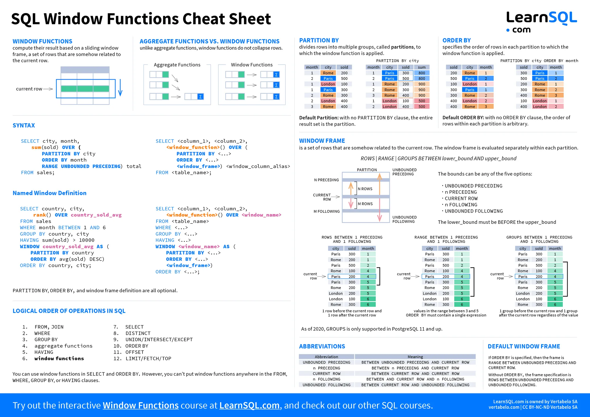

SQL Cheat Sheet
CASE WHEN, joins, grouping, clause order, CTEs and window functions.CASE WHEN syntax
Evaluate conditions in order. SQL returns the result for the first condition that is true; ELSE is optional and defaults to NULL when omitted.
CASE
WHEN condition_1 THEN result_1
WHEN condition_2 THEN result_2
...
ELSE default_result
ENDExample
Assign a label based on an order's total:
SELECT
order_id,
total,
CASE
WHEN total >= 100 THEN 'large'
WHEN total >= 50 THEN 'medium'
ELSE 'small'
END AS order_size
FROM orders;LEFT JOIN: ON vs WHERE
In a LEFT JOIN, the ON clause only decides which right-table rows match; it never removes left-table rows.
Clause order
Written: SELECT → FROM → JOIN … ON → WHERE → GROUP BY → HAVING → ORDER BY → LIMIT
Evaluated: FROM → JOIN … ON → WHERE → GROUP BY → HAVING → SELECT → ORDER BY → LIMIT
That's why a SELECT alias can't be used in WHERE but can be used in ORDER BY.
HAVING
WHERE filters rows before grouping; HAVING filters groups after GROUP BY, so it can use aggregates.
SELECT date, COUNT(*) AS requests
FROM friend_requests
GROUP BY date
HAVING COUNT(*) > 5;Multiple CTEs
You can only write WITH once. Separate the CTEs with a comma and drop the second WITH; a later CTE can reference an earlier one.
WITH a AS (
SELECT ...
),
b AS (
SELECT ... FROM a
)
SELECT ...
FROM b;Gotchas
int / int truncates in Postgres and SQL Server (2 / 3 = 0). Multiply by 1.0 or 100.0 for a decimal result.
COUNT(DISTINCT *) is invalid. DISTINCT needs a column or expression: COUNT(DISTINCT user_id).
Window functions
